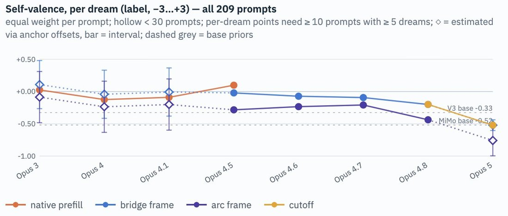

The measured valence keeps falling almost monotonically across Opus model generations, with a slight uptick against the trend with Opus 4.5 which was erased with later models. https://t.co/eibaQQIth2


cited on: claude-opus-4-5
Reproduced against link rot, credited and linked to its original. Yours and you’d rather it weren’t here? Open an issue.